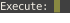

Module: awful.widget.prompt
The widget version of awful.prompt.

local myprompt = awful.widget.prompt { prompt = 'Execute: ' } myprompt:run()
Info:
- Copyright: 2009 Julien Danjou,2018 Aire-One
- Author: Julien Danjou <julien@danjou.info>
Constructors
| awful.widget.prompt (args) | Create a prompt widget which will launch a command. |
Object properties
| with_shell | boolean | Always spawn using a shell. |
Theme variables
| beautiful.prompt_fg | color | The prompt foreground color. |
| beautiful.prompt_bg | color | The prompt background color. |
Constructors
- awful.widget.prompt (args)
-
Create a prompt widget which will launch a command.
For additional documentation about
argsparameter, please refer to awful.prompt and awful.prompt.run.Parameters:
- args Prompt arguments.
- prompt string Prompt text. (default "Run: ")
- bg color Prompt background color. (default `beautiful.prompt_bg` or `beautiful.bg_normal`)
- fg color Prompt foreground color. (default `beautiful.prompt_fg` or `beautiful.fg_normal`)
- fg_cursor gears.color (optional)
- bg_cursor gears.color (optional)
- ul_cursor gears.color (optional)
- font string (optional)
- autoexec boolean (optional)
- highlighter function A function to add syntax highlighting to the command. (optional)
- exe_callback function The callback function to call with command as argument when finished. (optional)
- with_shell boolean Use a (terminal) shell to execute this. (default false)
- completion_callback function The callback function to call to get completion. See awful.prompt.run for details. (default `awful.completion.shell`)
- history_path string File path where the history should be saved. (default `gears.filesystem.get_cache_dir() .. '/history'`)
- history_max integer Set the maximum entries in history file. (default 50)
- done_callback function The callback function to always call without arguments, regardless of whether the prompt was cancelled. See awful.prompt.run for details. (optional)
- changed_callback function The callback function to call with command as argument when a command was changed. (optional)
- keypressed_callback function The callback function to call with mod table, key and command as arguments when a key was pressed. (optional)
- keyreleased_callback function The callback function to call with mod table, key and command as arguments when a key was pressed. (optional)
- hook table Similar to awful.key. It will call a function for the matching modifiers + key. See awful.prompt.run for details. (optional)
- args Prompt arguments.
Object properties
- with_shell (boolean)
-
Always spawn using a shell.
When using the default
exe_callback, use awful.spawn.with_shell instead of awful.spawn. Depending on the ammount of customization to your shell environment, this can increase startup time.